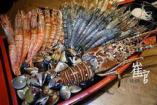
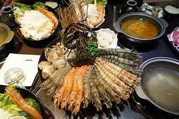

首頁
第2頁
第3頁
第5頁
品牌研究
品牌介紹 1
Your browser does not support the audio element.
鍋普林

動機
不知為何，台灣人特別愛吃火鍋，尤其是冬天，不吃火鍋好像少了點什麼。但要小心的是，
火鍋含有高普林，容易引發痛風，讓人關節發痛、發軟，更可怕的是，痛風患者罹患高血壓與糖尿病的機會還會比一般人高，增加健康風險。
在菜單標上各項食材普林值服務生COSPLAY護士服、醫師白袍
出示健保卡及送乙支針筒酒或果汁
每月一次變裝趴，凡變裝來店用餐及享85折
與各大急診室特約合作，凡於店內用餐皆可享飯後救護車免費接送各大醫院急診室。